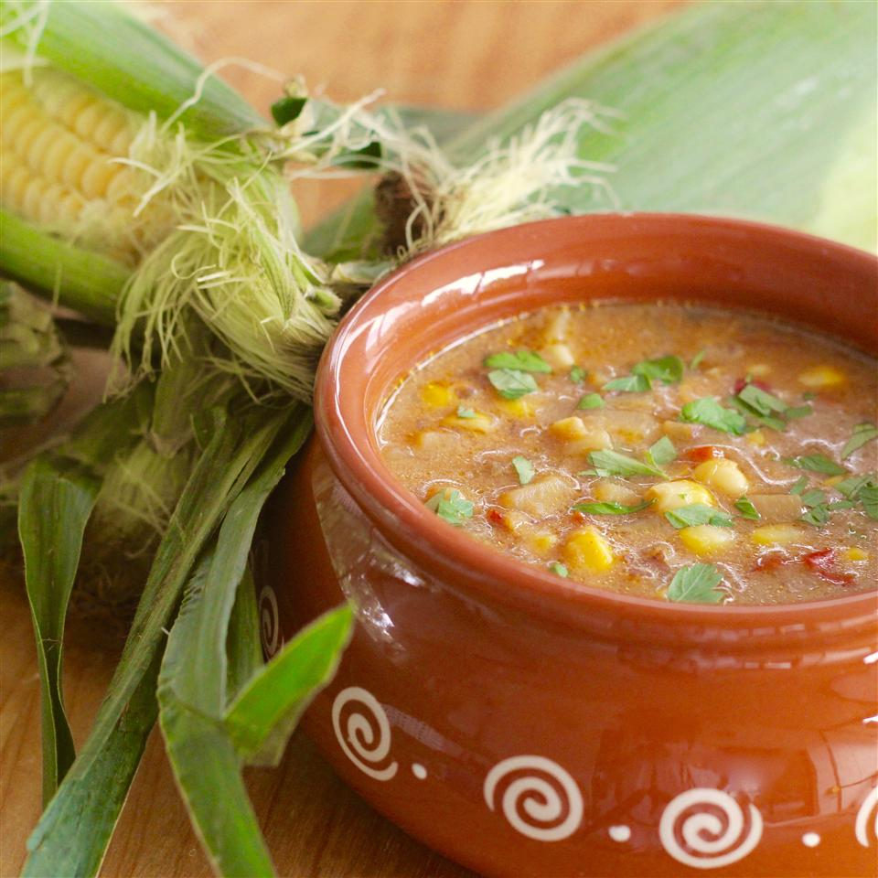

Summer Corn Chowder

Description
This summer Corn Chowder is creamy, comforting and full of flavor! Made with an abundance of
fresh sweet corn, tender potatoes, flavorful hearty bacon, and finished with chives and cheese.
Truly this soup is too hard to resist and can be enjoyed all summer long!
Ingredients
- 2 tablespoons olive oil
- 2 tablespoons butter
- Item 35 cups vegetable broth
- 4 cups corn kernels
Steeps
- Heat olive oil and butter in a Dutch oven over low heat. Add onion; cook until tender,
about 10 minutes. Sprinkle flour over onion; cook and stir until onion is coated, about 5
minutes.
- Stir vegetable broth and potatoes into the onion mixture; bring to a boil. Reduce heat to medium;
cook partially covered until potatoes are tender, about 10 minutes.
- Add corn, red pepper, green pepper, half-and-half, ground black pepper, and salt. Reduce heat to
low; cook and stir until corn is softened, about 8 minutes.